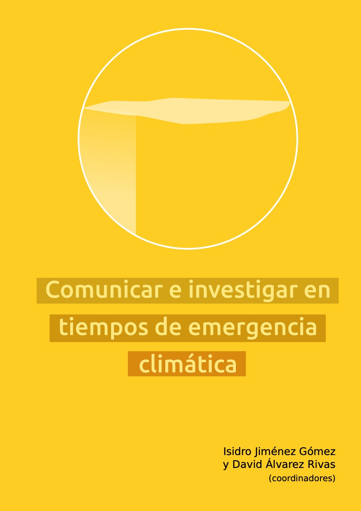

This chapter analyses the “Environment” campaign broadcast by Clan, the children’s channel of Spanish public television (RTVE), in June 2021. A discourse analysis of the ten videos is carried out from the perspective of the ecosocial transition, identifying both the strengths that favour the transmission of ecosocial imaginaries and the weaknesses that limit it. Results show the channel’s interest in conveying ecological messages on respecting and protecting animals, caring for forests and preventing fires, the excessive use of wet wipes, litter in nature, saving water and energy, local and seasonal food, and pollution of seas and oceans. However, the tone of the messages could be more assertive and focus on reducing waste rather than on where it is disposed of. These shortcomings may stem from the limitations of the format—spots of less than a minute with no clear connection between them—which make it very hard to address such a complex, multi-causal phenomenon as the environmental crisis in language suited to young audiences. The chapter recommends that such initiatives become part of a global, cross-cutting environmental literacy strategy within the channel’s permanent programming.
Book chapters · 2022
La campaña «medio ambiente» del canal infantil Clan (RTVE) como herramienta de comunicación ecosocial
[The “Environment” Campaign of Clan (RTVE) Children’s Channel as a Tool for Ecosocial Communication]
In: Comunicar e investigar en tiempos de emergencia climática (pp. 98–118). Dykinson
